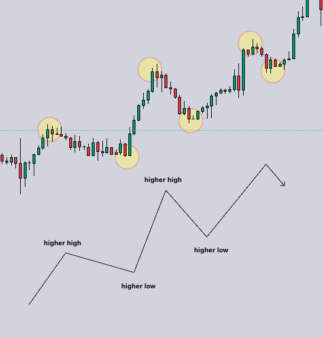
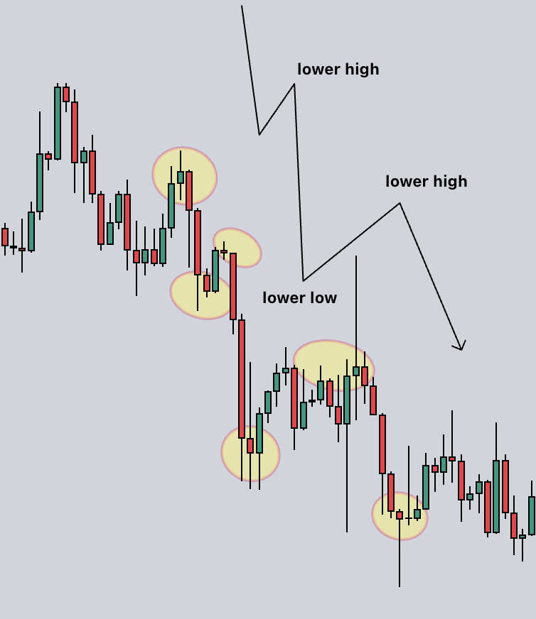
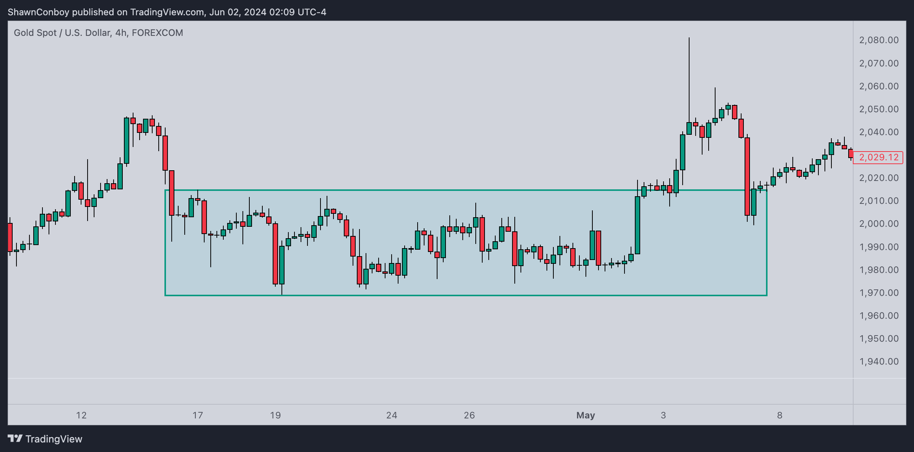

Market structure is basically the flow of the market as you're looking at it.
When you open the charts and you're looking at them, you have to ask yourself. Where are we right now? Where is the market flowing.
The market flows in three ways.
You can have a chart that is in an uptrend. In an uptrend, you have a chart that is showing higher high points and higher low points.
You can have a chart that is in a downtrend. In an downtrend, you have a chart that is showing lower high points and lower low points.
Lastly, we have ranging markets. Ranging happens when price is bouncing between a two zones. It can last for some time. Ideally, you don't want to trade in ranges, you can't pinpoint exactly when price will break out of that range, so the odds of a trade going in your favor are slightly lower.
Right here, you can see price is bouncing up and down within the zone we have drawn. An uptrend or downtrend isn't easily identifiable when looking at it.